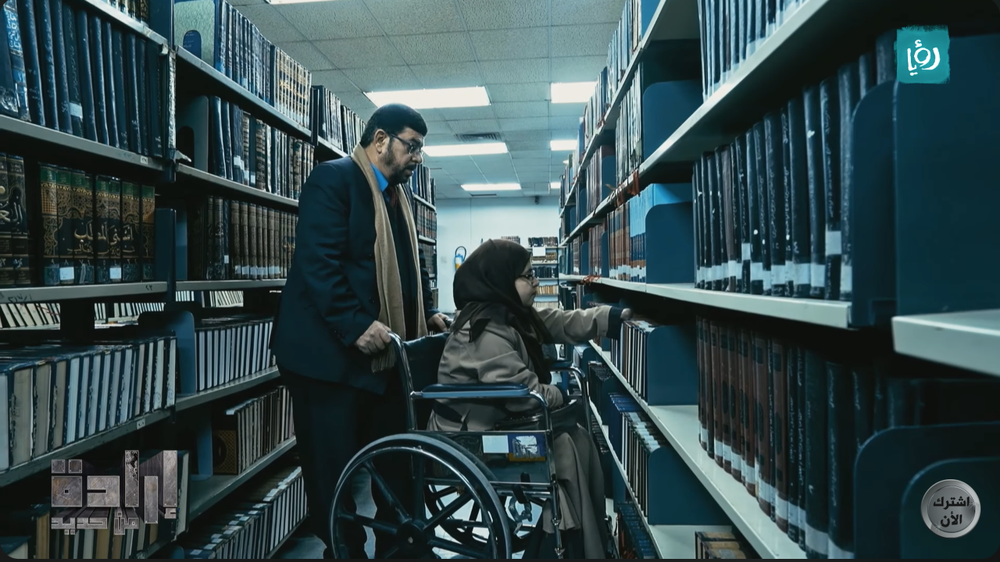
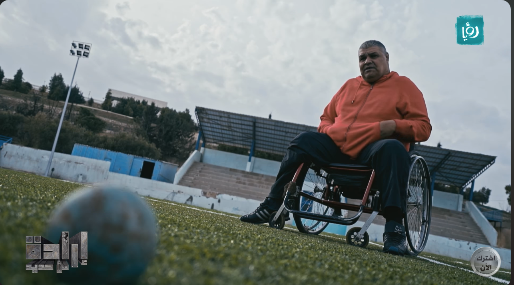
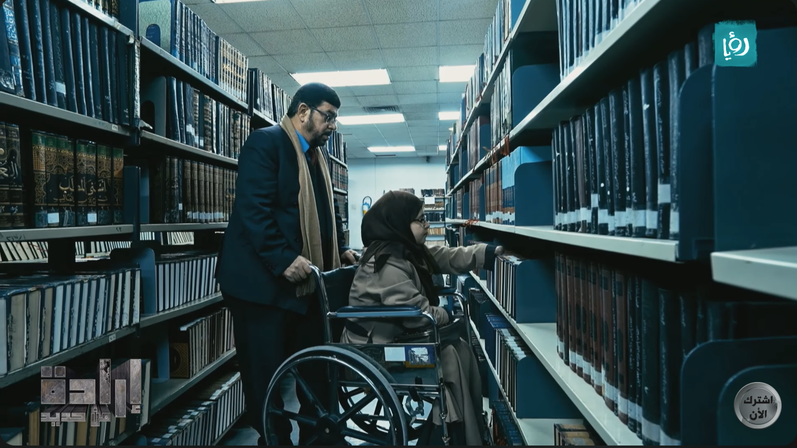
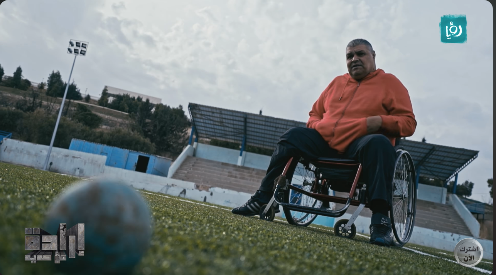

Description:
A program that highlights the artistic, sporting and crafts achievements of people with disabilities who have reached global or national achievements,
including the blind, the deaf, the dumb, and those with mobility disabilities, and the difficulties they are exposed to from the moment they are exposed
to a disability accident until they reach global stardom.
The program also presents a visual monitoring of all the achievements made by the person.
The program consists of 30 episodes


 


